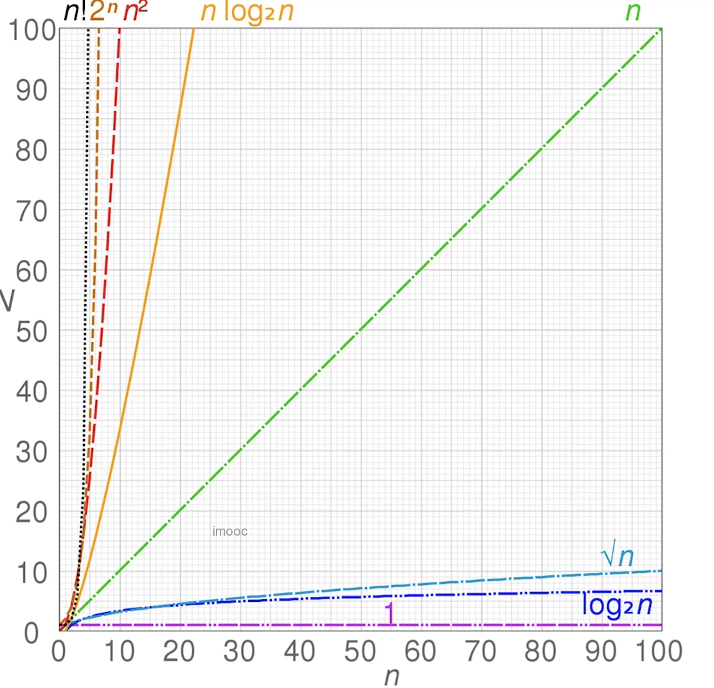

1.1. 基本概念
- 数据结构
计算机存储、组织数据的方式；
- 算法
一系列解决问题的清晰指令；
程序 = 数据结构 + 算法 ； 数据结构为算法提供服务，算法围绕数据结构操作；
1.2. 常见数据结构
- 有顺序
栈、队列、链表
- 无序
集合、字典
- 层级
树、堆、图
1.3. 时间复杂度计算
- 概念
一个函数，用大o表示，比如：O(1)、O(n)、O(logN)... ； 定性描述该算法的运行时间
- 时间复杂度图

- 时间复杂度代码示例
O(1)
let i = 0 ;
i+= 1;
O(n)
for(let i = 0; i< n; i+1>){
console.log(i)
}
O(1) + O(n) = O(n)
let i = 0 ;
i+= 1;
for(let j = 0; j< n; j+1>){
console.log(j)
}
O(n)*O(n) = O(n^2)
for(let i = 0; i< n; i+1>){
for(let j = 0; j< n; j+1>){
console.log(j)
}
}
O(logN)
let i = 1;
while (i < n) {
console.log(i);
i *= 2
}
1.4. 空间复杂度
- 概念
一个函数，用大O表示，比如：O(1)、O(n)、O(logN)... ；算法在运行过程中临时占用存储空间大小的量度
- 空间复杂度代码示例
O(1)
let i = 0 ; //单个变量
i+= 1;
O(n)
let list = []
for(let i = 0; i< n; i+1>){
list.push(i)
}
O(n^2)
const matrix = [];
for(let i = 0; i< n; i+1>){
matrix.push([])
for(let j = 0; j< n; j+1>){
matrix.push([i]).push(j)
}
}